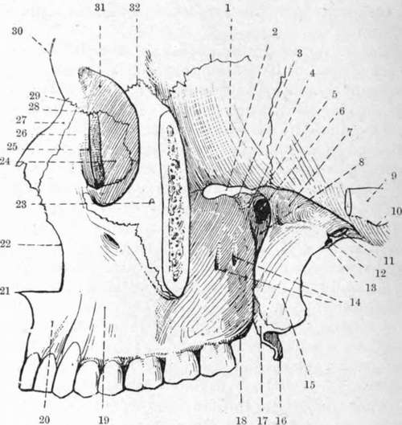

Teeth
Description
This section is from the book "Surgical Anatomy", by John A. C. MacEwen. Also available from Amazon: Surgical Anatomy.
Teeth
The time of eruption of the milk teeth is variable. The lower central incisors appear about the sixth to ninth month, upper incisors tenth month, lower lateral incisors and first four molars about twelfth to fourteenth month. Then come the canines and four second molars, the set being completed by the end of the second year. Of the permanent teeth of the lower jaw, the first molars appear about the sixth year, and central incisors about the seventh, lateral eighth, first premolars ninth, second premolars tenth, canines eleventh, second molars twelfth, third molars about seventeenth year, but may be much later or may not erupt. Those of the upper jaw appear a little later than those of the lower. The first milk tooth is cut about the seventh month, and the first permanent tooth at the seventh year. The milk teeth are twenty in number, while the permanent teeth number thirty-two.
A tooth is formed by a dipping in of epithelium, which becomes cupped at its extremity, forming the enamel organ, a process of the underlying connective tissue growing up into it and forming the dentine papilla. The tooth, composed of enamel produced by the enamel organ, and of dentine by the papilla and its contained cells (odontoblasts), is contained in a tooth sac or follicle supplied by the jaw itself, which forms an alveolar periosteum for the root, which is partly formed by the papilla and partly by the deposit of cement upon it by the alveolar periosteum. The remains of the papilla form the pulp, which occupies the pulp cavity.
As the permanent teeth approach the surface, the milk teeth generally fall out, owing to absorption of their roots.
The upper incisors and canines and the lower bicusps have cylindrical roots, and hence in extracting are first loosened by a rotatory movement. The roots of the lower incisors and canines and the upper bicusps are flattened, necessitating a lateral movement to loosen them. The roots of the upper molars are three in number, whereas those of the lower molars are two, and the roots of the two first upper molars are frequently divergent, while those of the wisdom teeth of both jaws, but particularly the lower, are convergent and curved backwards. After extraction of a permanent tooth, absorption of the alveolar margin of the jaw generally occurs.
Alveolar abscess frequently occurs in connection with the fangs of the teeth. Where the tooth has a single fang the pus may travel along the fang to the surface, but in other teeth it tends rather to burrow through the alveolus, pointing in some cases through the gum, but more generally through the cheek.
The chief forms of tooth tumours are odontomas, which occur during the developmental period, and consist of dental tissue, and dentigerous cysts, which consist of an expansion of the follicle of an unerupted tooth, which is found generally within the cyst.
Hereditary syphilis affects chiefly the permanent upper central incisors, which, instead of presenting a narrow neck and broad crown, have a broad base and taper toward the crown (peg-shaped), which is frequently notched ('Hutchinson teeth ').
Fig. 10.-The Zygomatic and (From Buchanan's)
Great wing of sphenoid. 17.
Spheno-maxillary fissure. 18.
Back part of infra-orb. groove. 19.
Infratemporal crest. 21.
Spheno-palat. foramen. 22.
Zygom. surf, of great wing of sphenoid. 23.
Pierygo-maxillary fissure. 24.
Zygoma. 25.
Preglenoid tubercle. 26.
Foramen ovale. 27.
Foramen spinosum. 28.
Spine of sphenoid. 29.
Openings of posterior dental canals. 30.
External pterygoid plate of sphenoid. 31.
Hamular process. 32.
1. | Great wing of sphenoid. | 17. | Tuberosity of palate bone. |
2. | Spheno-maxillary fissure. | 18. | Tuberosity of superior maxilla. |
3· | Back part of infra-orb. groove. | 19. | Canine fossa. |
4· | Spheno-maxillary fossa. | 20. | Incisor fossa. |
5· | Infratemporal crest. | 21. | Anterior nasal spine. |
6. | Spheno-palat. foramen. | 22. | Nasal notch. |
7· | Zygom. surf, of great wing of sphenoid. | 23· | Malar foramen. |
8. | Pterygo-maxillary fissure. | 24· | Orbital surface of lachrymal bone. |
9· | Zygoma. | 25· | Lachrymal groove. |
ΙΟ. | Preglenoid tubercle. | 26. | Nasal plate of superior maxilla. |
II. | Foramen ovale. | 27. | Nasal bone. |
12. | Foramen spinosum. | 28. | Fronto-maxillary suture. |
ΐ3· | Spine of sphenoid. | 29. | Fronto-nasal suture. |
ΐ4· | Openings of posterior dental canals. | 30. | Glabella. |
IS. | External pterygoid plate of sphenoid. | 31· | Orbital plate of frontal. |
16. | Hamular process. | 32· | Fronto-malar suture. |
Continue to: